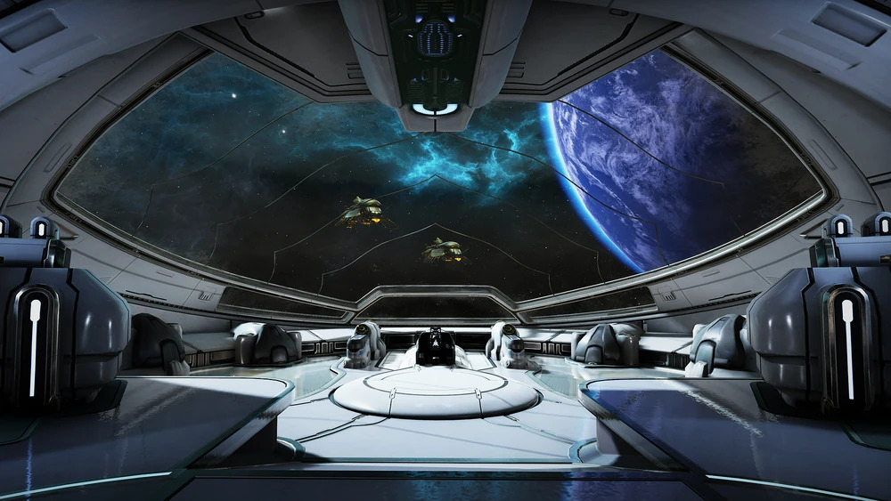
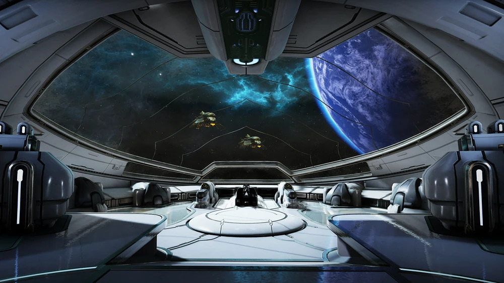

Echoes of the Void: A Warframe ZORK-like Odysssey
You awaken in your Orbiter, surrounded by the familiar hum of machinery. Ordis, your Cephalon, alerts you to a mysterious signal originating from an unknown location.
You awaken in your Orbiter, surrounded by the familiar hum of machinery. Ordis, your Cephalon, alerts you to a mysterious signal originating from an unknown location.
